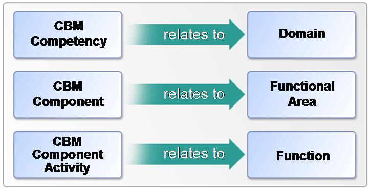
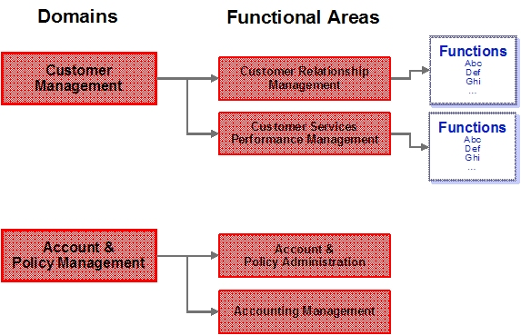

| Artifact: Functional Areas Description (ART 0580) |
 |
|
The purpose of this artifact is to capture functional domains, the functional areas that constitute them, the functions they provide, and IT subsystems that enable them, providing important linkage between the business view and the IT view. |
| Roles | Responsible: | Modified By: |
|---|---|---|
| Tasks | Input To:
| Output From: |
| Main Description |
The Functional Areas Description artifact documents functional domains, the functional areas that constitute them, the
functions they provide, and IT subsystems that enable them, providing important linkage between the business view and
the IT view. In this artifact, each functional area is concisely described in terms of the functions it is responsible
for, as well as functions it depends on from other functional areas. The Functional Area Description artifact is
typically produced during the service identification process as part of the overall domain modeling and decomposition
effort. If CBM is used as an input, the Competencies identified in the CBM Component Map can be treated as domains. Functional Area Analysis then decomposes those domains. Figure 1 shows the relationship between CBM and SOMA Functional Area Analysis elements:  |
||||||||||||||||||||||||||||||
|---|---|---|---|---|---|---|---|---|---|---|---|---|---|---|---|---|---|---|---|---|---|---|---|---|---|---|---|---|---|---|---|
| Brief Outline | A Functional Areas Description captures:
|
||||||||||||||||||||||||||||||
| Notation | Functional Areas DescriptionDecomposition of domains into functional areas, and the identification and description of business functions associated within a functional area. The decomposition of domains into functional areas can be visually represented using a domain decomposition diagram (Figure 1).  Figure 1: Domain Decomposition The key information is captured by completing a Functional Areas Description template for all domains that fall within the scope of analysis. Within each domain, identify the functional areas, functions and business entities that are relevant to the solution area. Table 1 below provides an example:
Table 1: Functional Area Description
Functional Area InteractionsA description of functional area interactions and dependencies A Functional Areas work product instance describes interactions among the functional areas that have been identified. Domain: <domain name>
Functional Area: <functional area name.
Functional Areas to Subsystem Cross ReferenceIdentification of candidate subsystems proposed to realize functions for each functional area. The association of functional areas to subsystems can be captured using the Functional Area to Subsystem cross reference template. Typically one functional area maps to one subsystem. This association results in assignment of functional responsibilities to subsystems.
|
||||||||||||||||||||||||||||||
| Selected Representation | Domains, functional areas and functions associated with each functional area can be documented using SOMA-ME. The preferred approach for describing functional area interactions and dependencies is to use a UML sequence diagram (within RSA/SOMA-ME)to show how functional areas interact in distinctive scenarios. The association of functional areas to subsystems can be captured using SOMA-ME. |
| Templates | |
|---|---|
| Examples |
| Impact of not having | An important step in a successful SOA initiative is the identification of business aligned functional areas within which related services can be grouped, and the identification of business aligned subsystem boundaries that will group the Service Components that realize (are the implementation of) services. Failure to clearly define functional areas and associated subsystems can lead to the proliferation of redundant or overlapping services and related components, can result in gaps in the service portfolio, and can make it more difficult to meet expectations for reuse of services. |
|---|---|
| Reasons for not needing | This artifact need not be produced if there is already is a document meeting similar requirements. |
| Representation Options | Domains, functional areas and functions associated with each functional area can be documented using the Functional Areas Description template. Functional area interactions and dependencies can alternatively be documented using the Functional Area Interactions template. The association of functional areas to subsystems can be captured using the Functional Area to Subsystem cross reference template. |
| Checklists | |
|---|---|
| Tool Mentors | |
| Estimation Considerations |
| © Copyright IBM Corp. 1987, 2012 All Rights Reserved Property of IBM These materials are intended only for use as part of an IBM engagement |